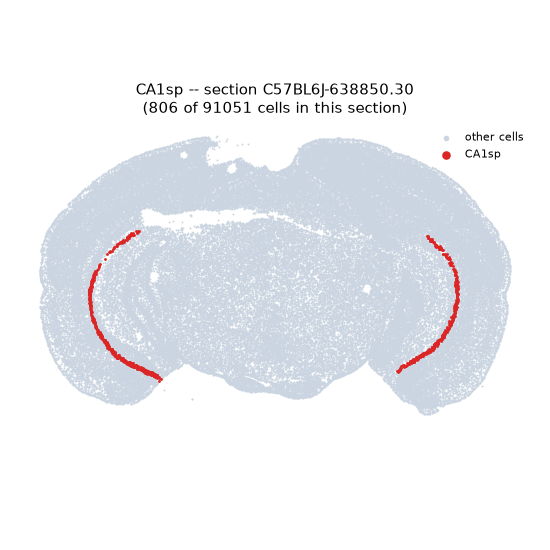
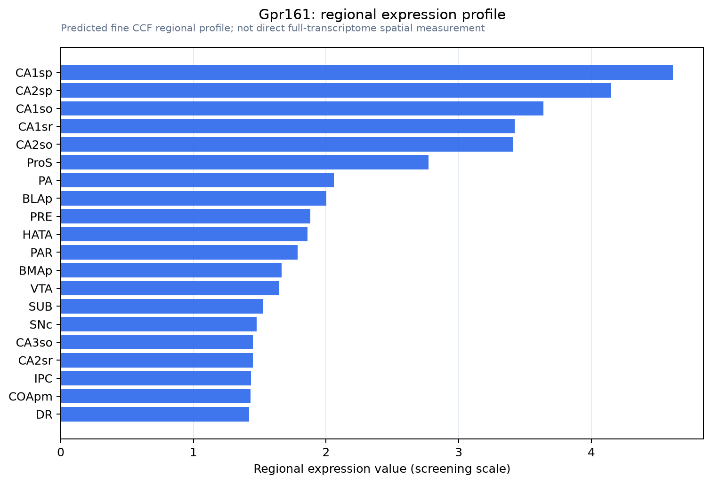

Gpr161
G protein-coupled receptor 161
Spatial tier: RESTRICTED · Class: GPCR · Top region: CA1sp (Field CA1, pyramidal layer) · Positive regions: 13/554
43.8Discovery Score
42.8Targetability Score
CEvidence grade C
What this means: Gpr161: fine CCF profile is restricted toward CA1sp (top regions: CA1sp, CA2sp, CA1so, CA1sr, CA2so; 13 positive regions); direct spatial validation is still required.
Direct spatial evidence
MERFISH REGION LOCATOR

Regional expression figure

Predicted WMB × fine-CCF profile; not direct full-transcriptome spatial measurement.
Spatial profile
Evidence and specificity
- Evidence status
- PREDICTED_FINE
- Direct sources
- None; predicted localization only
- Exclusive threshold
- 12 positive regions out of 554
- Spatial specificity
- 0.345
- Top-region fraction
- 0.077
- Filter status
- PASS
Interpretation limits
- Cell-type-to-region projection is imputed expression, not direct spatial measurement.
- Adult reference atlases do not establish stability across age, sex, strain, state, or disease.
- Transcript abundance does not guarantee protein abundance or genetic-tool performance.